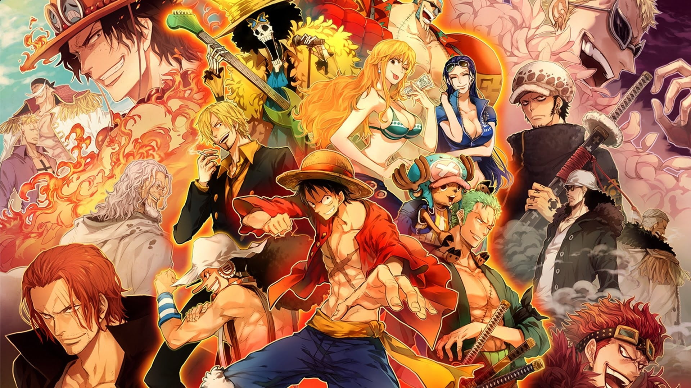

One Piece

One Piece


Luffy es nieto de Monkey D. Garp, Vicealmirante de la Marina y archienemigo de Gol D. Roger, quien hizo historia mundial como el Rey Pirata y propietario original del tesoro de One Piece. Aun así, desde muy joven, Luffy quiso seguir los pasos de los piratas que admiraba, como Shanks y el propio Roger. De niño, ingirió accidentalmente el Gomu Gomu no Mi, una fruta que le otorgaba poderes de goma, habilidades que desarrolla considerablemente a lo largo del anime, creando diferentes ataques.
Primer pirata en ser reclutado por Luffy para los Sombreros de Paja. La invitación se hizo en el episodio 2 y fue aceptada oficialmente en el 3. Zoro también se encuentra entre los cuatro miembros más poderosos del grupo. Además, igual que su capitán, parte de la Peor Generación, con una recompensa de $320,000,000. Mientras Luffy sueña con convertirse en el Rey Pirata, el sueño de Zoro es algún día ser el mejor espadachín del mundo.
Antes de convertirse en la tercera integrante de los Sombreros de Paja, Nami incluso se infiltró en el grupo con la intención de robarles. La joven perdió a sus padres en la guerra a una edad temprana y fue adoptada por Bell-mère, una mujer de la Marina.
La palabra "Uso" en japonés significa "mentira", o "falsedad". El origen de su nombre, su larga nariz y sus constantes historias fantásticas le han valido reputación de mentiroso. Sin embargo, el pirata es un hombre sensible, y sus increíbles narraciones surgieron como un mecanismo de defensa. Son una forma que encontró, de niño, para afrontar la muerte de su madre y el abandono de su padre.

Sanji es el tercer hijo de la noble familia Vinsmoke y creció en medio del maltrato de sus parientes cercanos. Sus hermanos lo intimidaban, menospreciando su actitud de alimentar a aquellos que su padre consideraba inferiores, e ignoraba. El patriarca vio a su hijo como la vergüenza de la familia. Sanji renunció a su título de príncipe del Reino de Germa y cortó los lazos con todos cuando solo tenía ocho años.
Sexto miembro de los Sombreros de Paja y uno de los pocos que nacieron en Grand Line. Tony Tony Chopper era un reno cualquiera hasta que ingirió la fruta Hito Hito no Mi, que le otorgó no solo características humanoides, sino también una gran inteligencia y la capacidad de cambiar la forma física de su cuerpo. Después de las primeras interacciones desastrosas con los humanos, Chopper fue rescatado por el doctor Hiriluk, y la doctora Kureha. El doctor Hiriluk ayudó al joven reno a convertirse en médico.
Aunque presentada antes que Chopper, Nico Robin fue inicialmente una antagonista menor en la saga Arabasta, tiempo durante el cual fue conocida como Miss All Sunday. Solo se unió a la tripulación de Luffy después de que se uniera el médico reno, dejando el grupo una vez y reincorporándose oficialmente al equipo solo al final del arco Enies Lobby.
En la Saga Water 7 conocemos al que se convertiría en el octavo pirata en formar parte de la tripulación de Luffy, Franky. Sin embargo, al igual que Nico Robin, el personaje inicia su trayectoria como antagonista. Franky, un cyborg de 36 años, es el líder de la familia Franky, que trabajaba en el desmantelamiento de barcos.
El noveno pirata en unirse a la tripulación del Sombrero de Paja, Brook fue encontrado por Luffy y su tripulación en una isla fantasma conocida como Thriller Bark en la Zona del Triángulo Demoníaco. El pirata vivió allí durante casi 50 años tras la muerte de su tripulación. Su antiguo equipo fue víctima de envenenamiento, entre otros enemigos que acabaron con ellos. Brook sobrevivió solo gracias a la fruta Yomi Yomi no Mi, que le dio una segunda vida como un esqueleto inmortal.